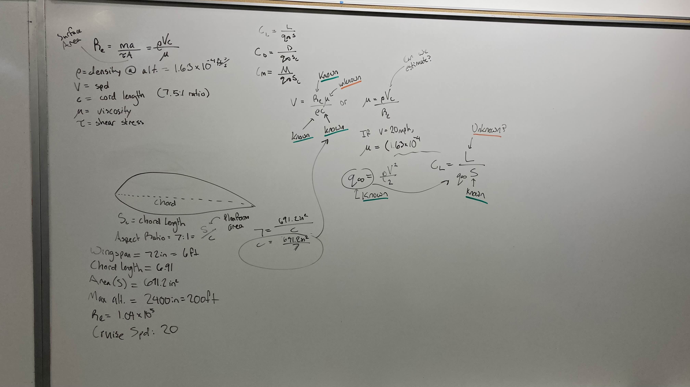

AIAA DBF-Style Aircraft Design & Build
Founded and led an 8-member student aircraft team at EvCC over roughly a year. The team completed aerodynamic sizing, converged on a rib and spar wing structure with PLA ribs on carbon fiber spars, and developed a full SolidWorks CAD model before I transferred to UW. The aircraft never reached full-scale build or flight, but the design decisions were grounded in real constraints and the early test failures directly shaped the final configuration.
Overview
I founded a DBF style aircraft subteam within the EvCC STEM Club, prioritizing early build and flight experience over targeting competition requirements directly. The intent was to develop practical aerodynamic judgment before refining toward competition standards.
Team formed. We did aerodynamic sizing, picked an airfoil, and nailed down the wing geometry.
Designed and built a small scale PLA airplane in SolidWorks. The CG was positioned aft of the center of lift, causing instability in flight. The vertical stabilizer separated from the fuselage on the second flight. Both failures directly informed the design pivot.
Switched to a rib and spar construction. Final configuration: 8 PLA ribs on carbon fiber spars, Depron foam skin, all moving horizontal and vertical stabilizers, full span ailerons on ribs 2 through 4 and 7 through 9, and a bolted wing to fuselage joint. Component selection and manufacturing plan finalized.
Started the full scale SolidWorks model and printed small scale wing ribs to validate the rib profile. I left the team at this point to transfer to the University of Washington.
This page is structured as a reflection and reconstruction. The first half documents the project as executed. The second half revisits those design decisions against current A&A coursework to identify what was missing and what the correct approach would have been.
Problem & Approach
The team had no prior background in RC aircraft design. Rather than working directly toward AIAA DBF competition requirements, the decision was to build and fly something first to develop foundational aerodynamic judgment before targeting competition standards.
Early work centered on establishing sizing parameters through first-principles calculations: a 6-foot wingspan, 7.5 aspect ratio, 9.61-inch chord, 611 square inches of wing area, and a cruise speed of 20 mph yielding a Reynolds number of approximately 1.04 × 10⁵. These numbers came out of whiteboard sessions covering lift, drag, aspect ratio, and wing loading before any design decisions were committed.
Airfoil selection converged on NACA 2411 based on the low Reynolds number regime and the team's manufacturing capability. The construction approach used 3D printed PLA ribs on carbon fiber spars with Depron foam skin, chosen because it was achievable with available tools and budget. A small scale foam model was built first to validate the general configuration before committing to the structural design.

My Role
My primary contribution in the early phase was organizational. The team had no prior workflow or established starting point, so a significant portion of initial time went into structuring the team, setting design review cadences, and establishing the technical baseline. This delayed the design phase more than anticipated.
Leadership
- Founded the aircraft subteam within the EvCC STEM Club and recruited 7 members across Aeronautics and Mechanical programs.
- Established team structure, meeting cadence, and documentation workflow. A significant portion of early project time went into organizing the team rather than technical work, which delayed the design phase.
Technical
- Led aerodynamic sizing including wingspan, chord, aspect ratio, wing area, Reynolds number, and cruise speed target.
- Drove airfoil selection toward NACA 2411 based on the low Reynolds number regime and team manufacturing capability.
- Designed the rib and spar wing structure: 8 rib layout, carbon fiber rod spars, Depron foam skin, bolted wing to fuselage joint, full span ailerons across ribs 2 through 4 and 7 through 9, and all moving horizontal and vertical stabilizers.
- Printed small scale PLA wing ribs to validate the rib profile before I left to transfer to UW.
Limitations
The project did not reach a full scale build or flight. The limitations below are honest about what was missing and directly inform the reconstruction in the next section.
| Limitation | Impact | What should have been done |
|---|---|---|
| No prior RC aircraft design experience | Early project time consumed by foundational learning instead of design work | Establish basic aerodynamics knowledge prerequisites before forming the team |
| Small-scale model CG positioned aft of center of lift | Vehicle unstable in flight. Required design pivot and consumed build timeline | Formal CG/CP check and stability margin verification before first flight attempt |
| Vertical stabilizer separation on second test flight | Structural failure during testing. Joint design was not adequately validated before flight | Static load test on all joints before flight |
| No lift or drag analysis | Wing sizing completed but CL, CD, and L/D ratio were never calculated or verified. Aerodynamic performance was assumed rather than predicted | Lift and drag polar analysis at cruise Reynolds number before committing to final wing geometry |
| Propulsion system not validated | Motor, ESC, and battery selected by budget and spec sheet only. Thrust to weight ratio and power loading were not calculated or tested | Thrust to weight ratio calculation and bench test before finalizing propulsion selection |
| No CFD analysis | Airfoil selection relied on NACA database references only. Actual flow behavior over the wing at cruise conditions was not analyzed | Basic CFD analysis using Autodesk CFD to verify airfoil performance at Re 1.04 x 10⁵ |
| No weight budget | Component masses were not estimated or summed. Wing loading, CG location, and total takeoff weight were never verified against design targets | Component weight estimate table before structural layout was finalized |
| Left team before full scale build began | Design changes after departure not captured. Scope of this page limited to my involvement only | Formal handoff documentation for incoming team members |
| No formal PDR or CDR conducted | Design decisions made through informal discussion. Difficult to track changes and verify assumptions consistently | Structured design review at each major milestone |
Reflection & Reconstruction
Revisiting this project through current A&A coursework made clear how much the original design left unverified. The three largest gaps were aerodynamic performance, structural integrity, and a corrected full-scale CAD model. The work below addresses each of those directly.
Aerodynamic Analysis
AVL + MATLAB
The original wing sizing established geometry but never verified aerodynamic performance. AVL was used to model the full 3D wing configuration: 6-foot span, NACA 2411 section, 7.5 aspect ratio, with control surfaces placed at the defined aileron stations on ribs 2 through 4 and 7 through 9.
The analysis output the neutral point location and spanwise lift distribution. The neutral point placed the required CG forward of where the original small scale prototype had it, which was consistent with the in-flight instability observed during testing. Without a formal neutral point calculation during the original build, there was no concrete CG target.
CL vs. alpha curves and spanwise lift distribution were plotted in MATLAB from the AVL output. Results confirmed that NACA 2411 operates acceptably at Re 1.04 × 10⁵ but stalls at a shallower angle of attack than typical higher-Re profiles, which tightens the usable flight envelope. The corrected CG target was set at 25% MAC based on the neutral point output, providing approximately 10% static margin.
Structural & Stability Analysis
Fusion 360 Simulation + SimScale
Two structural failures from the prototype drove this analysis: the aft CG instability and the vertical stabilizer separation on the second flight. Both pointed to load paths that were never formally evaluated during the original design.
Root bending moment under cruise lift was calculated analytically to establish load inputs for the simulation. The carbon fiber spar was modeled in Fusion 360 Simulation under a distributed lift load representing a 2g maneuver condition. The spar cross-section handled cruise loads with margin, but the root attachment showed stress concentration that would require closer attention before flight.
The vertical stabilizer joint was analyzed in SimScale. The original PLA fuselage interface was epoxy-bonded only, with no mechanical fastening. Under aerodynamic side load, the joint exceeded the shear strength of the bond at realistic flight conditions, which explains the in-flight separation. The corrected design adds a through-bolt at the stabilizer root and increases the bonded surface area to distribute the load.
CAD Reconstruction
Fusion 360
The full-scale model was rebuilt in Fusion 360 as a parametric assembly, incorporating corrections from the aerodynamic and structural analysis.
- CG position corrected to 25% MAC with ballast provisions for fine adjustment.
- Vertical stabilizer interface redesigned with a through-bolt and enlarged bond area at the root.
- Aileron hinge line repositioned to align with the correct neutral axis location from the AVL model.
- Rib geometry updated to the validated NACA 2411 profile at manufacturing scale.
The assembly covers all major structural components: main spar, 8 ribs, control surfaces, and fuselage interface. Building it parametrically means chord and span can be adjusted without a full rebuild, which would have saved significant time during the original design phase.